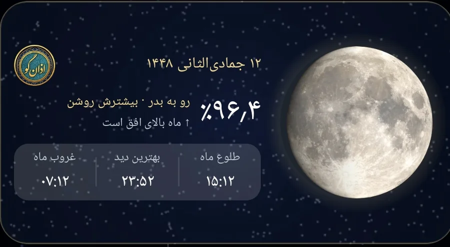
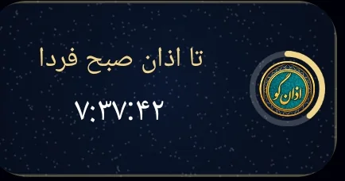
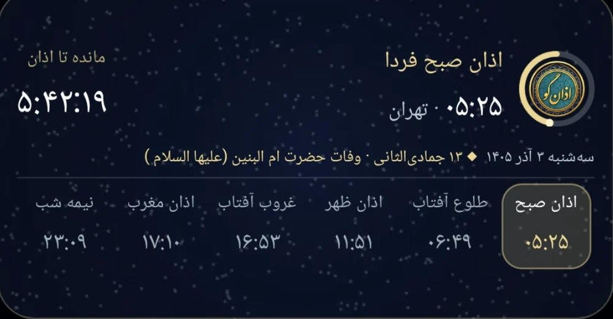
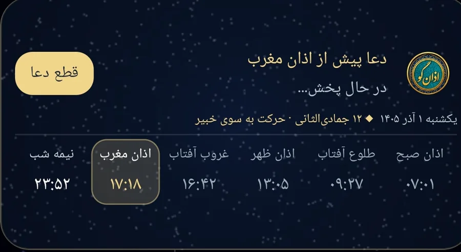
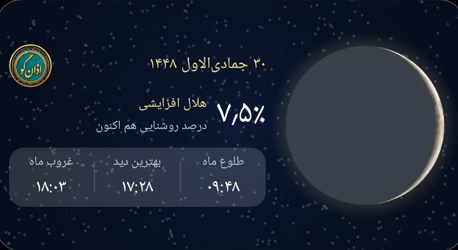
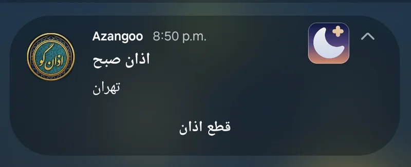
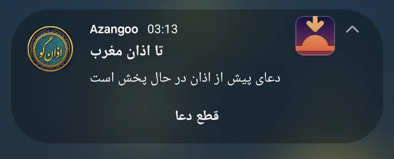

نگه دارید
انگشت را روی جای خالی صفحهٔ اصلی گوشی نگه دارید.
ویجت اوقات و ویجت ماه را به صفحهٔ اصلی گوشی اضافه کنید و اذان بعدی، شمارش معکوس و فاز ماه را بدون باز کردن برنامه ببینید.



اذان بعدی و شمارش معکوس را روی صفحهٔ اصلی گوشی ببینید. ویجت دو اندازه دارد.


تاریخ قمری، حالت و درصد روشنایی ماه، زمان طلوع و غروب آن و بهترین زمان دیدن هلال، همه روی صفحهٔ اصلی گوشی. تصویر ماه با فاز واقعی همان شب عوض میشود.
جزئیات رؤیت ماه را در صفحهٔ رؤیت ماه ببینید.

روش اضافه کردن هر دو ویجت یکی است.
انگشت را روی جای خالی صفحهٔ اصلی گوشی نگه دارید.
گزینهٔ «ویجتها» را بزنید.
«اذان گو» را در فهرست پیدا کنید.
ویجت اوقات (در اندازهٔ دلخواه) یا ویجت ماه را به صفحه بکشید.
هنگام پخش اذان یا دعا و پیش از هر اذان، اعلان اذان گو را میبینید و میتوانید از همانجا پخش را قطع کنید.




اوقات برای مکان شما، پخش یا اعلان برای هر اذان، دعا قبل و بعد از اذان، دعاهای رمضان و روشهای محاسبه.
مشاهده ←
ماه همین امشب، بهترین زمان و جهت دیدن هلال و پیشبینی ۲۹ یا ۳۰ روزه بودن ماه.
مشاهده ←
قبلهنما، دعا و زیارت، تسبیح، چهار زبان، پوسته، قالب ساعت، کار بدون اینترنت و حریم خصوصی.
مشاهده ←اذان گو در حال آزمایش بسته در گوگل پلی است. اگر آزمایشکنندهاید، با سه قدم برنامه را نصب کنید و نظرتان را برایمان بفرستید.
ایمیل حساب گوگلی را بنویسید که روی گوشی اندرویدتان وارد شده است (لازم نیست حتماً Gmail باشد). با زدن دکمه، برنامهٔ ایمیل خودتان با پیام آماده باز میشود؛ فقط «ارسال» را بزنید. این صفحه ایمیل شما را جایی ذخیره یا ارسال نمیکند. اگر برنامهٔ ایمیل باز نشد، ایمیل خود را مستقیم برای app@azangoo.com بفرستید.
لینک فقط برای ایمیلهایی کار میکند که در فهرست آزمایشکنندگان باشند.